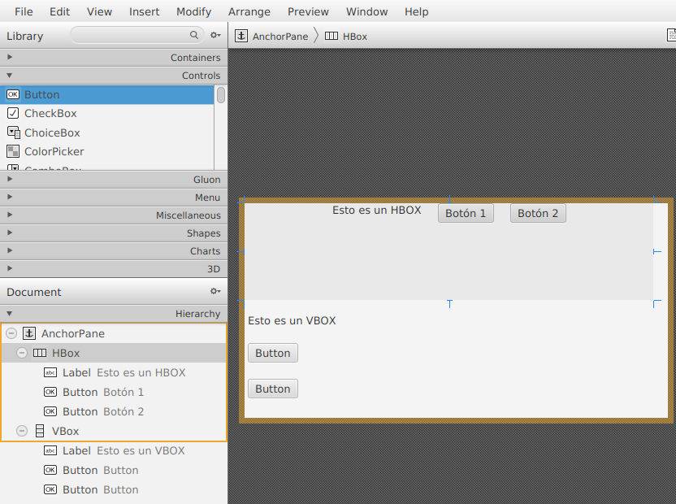
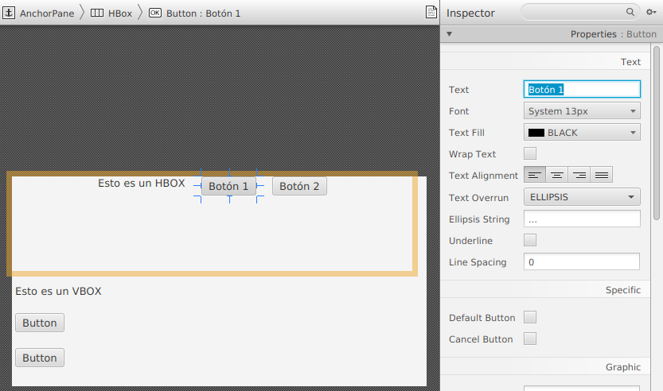
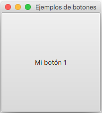
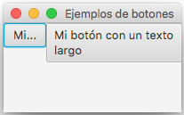
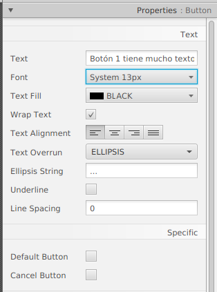
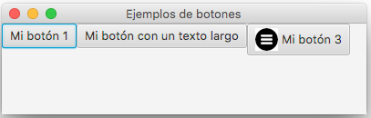
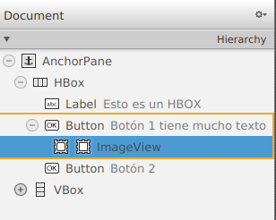
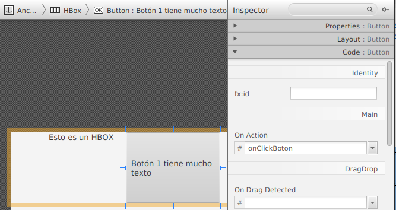
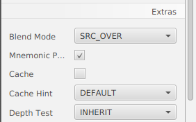

Un control de botón JavaFX permite que una aplicación JavaFX ejecute alguna acción cuando el usuario de la aplicación hace clic en el botón.
El control Button JavaFX está representado por la clase javafx.scene.control.Button.
Un botón JavaFX puede tener un texto y un icono que indiquen al usuario qué ocurrirá al hacer clic en el botón.
Crear un botón
Un control de botón se crea instanciaciendo un objeto de la clase Button. Aquí hay un ejemplo de instanciación del botón JavaFX:
Button button = new Button("Mi etiqueta");
El texto que se mostrará en el botón se pasa como parámetro al constructor del botón.
En Scene Builder:
Arrastramos de la sección Controls el elemento Button a nuestra escena, en este caso hemos añadido dos contenedores, un HBox y un VBox.

Una vez seleccionado el botón, a la derecha, en la sección propierties, tenemos la propiedad texto:

Añadir un botón al a escena
Para que un botón JavaFX sea visible, el objeto del botón debe añadirse al gráfico de escena.
Aquí hay un ejemplo que adjunta un botón JavaFX al gráfico de escena:
Button boton = new Button("My Button");
Scene scene = new Scene(boton, 200, 200);NOTA: el Botón se añade directamente al objeto Escena. Ocupando la totalidad del la escena. Normalmente se anidaría el Botón dentro de un componente de diseño de algún tipo, por ejemplo HBox.
El resultado de ejecutar el ejemplo del botón JavaFX anterior es una aplicación que se ve así:

El componente JavaFX HBox es un componente de diseño que coloca todos sus nodos secundarios (componentes) en una fila horizontal. El componente Java HBox está representado por la clase javafx.scene.layout.HBox.
Crear un HBox
Podemos crear el panel de dos formas, con un constructor vacío o añadiendo los componentes que contendrá:
HBox hbox = new HBox();
Button boton1 = new Button("Botón Número 1");
Button boton2 = new Button("Número de botón 2");
HBox hbox = new HBox(boton1, boton2);Este ejemplo de HBox distribuirá las dos instancias de Button una al lado de la otra en una fila horizontal.
En Scene Builder: arrastar el contenedor a la escena.
Texto del botón
Hay dos formas de configurar el texto de un botón JavaFX. La primera forma es pasar el texto al constructor Button. Ya has visto esto en ejemplos anteriores.
La segunda forma de configurar el texto del botón y llamar al método setText() en la instancia del Botón. Esto se puede hacer después de crear la instancia de Button. Por lo tanto, se puede usar para cambiar el texto de un Botón que ya está visible. Aquí hay un ejemplo de cómo llamar a setText() en un botón JavaFX:
boton1.setText("Haz click ");Tamaño del texto del botón
Podemos establecer el tamaño del texto de un botón JavaFX. Lo haremos usando la propiedad CSS -fx-text-size.
Podemos establecer el tamaño desde Scene Bluilder, pero lo correcto será hacer estos cambios desde una hoja de estilo.
Ajuste de texto de botón
El control Button de JavaFX admite el ajuste al texto del botón. Por ajuste de texto se entiende que si el texto es demasiado largo para mostrarse en una sola línea dentro del botón, el texto se divide en varias líneas.
Habilita el ajuste de texto en una instancia de JavaFX Button usando el método setWrapText(). El método setWrapText() toma un solo parámetro booleano. Si pasa un valor de verdadero a setWrapText(), habilita el ajuste de texto. Si pasa un valor falso a setWrapText(), deshabilita el ajuste de texto. Aquí hay un ejemplo que habilita el ajuste de texto en un botón JavaFX:

En Scene Builder: tenemos un check box para activar esta propiedad (el botón debe tener la altura apropiada).
Fuente del botón
Puede especificar con qué fuente se debe representar el texto en un botón JavaFX a través de su método setFont(). Aquí hay un ejemplo de cómo configurar una fuente en un botón JavaFX:
Button boton = new Button("Click me!");
Font font = Font.font("Courier New", FontWeight.BOLD, 36);
boton.setFont(font);En Scene Builder: tenemos un una propiedad llamada Font, en la que podemos establecer la fuente, el estilo y el tamaño.

Modo de botón predeterminado
Un botón JavaFX se puede configurar en un modo predeterminado. Cuando un botón está en modo predeterminado, se representa de manera diferente, por lo que el usuario puede ver que este es el botón predeterminado. En Windows, el color de fondo del botón cambia, aunque supongo que eso también depende del tema de color utilizado en la aplicación, etc. y puede cambiar en futuras versiones de JavaFX.
El botón predeterminado está destinado a ser utilizado para la "opción predeterminada" en un cuadro de diálogo o formulario. Por lo tanto, se vuelve más fácil para el usuario seleccionar la elección que probablemente esté haciendo con más frecuencia.
El botón predeterminado de un cuadro de diálogo o formulario tiene algunos métodos abreviados de teclado adicionales para ayudar al usuario a hacer clic en él:
- Windows y Linux
Si ningún otro botón tiene el foco, al presionar la tecla ENTER del teclado se activará el botón predeterminado.
Si el botón predeterminado tiene foco, al presionar la tecla ENTER del teclado se activará el botón predeterminado.
- Mac
Solo se puede activar el botón predeterminado presionando la tecla ENTER del teclado. Todos los demás botones se activan presionando la tecla ESPACIO del teclado.
La configuración de un botón JavaFX como botón predeterminado se realiza a través de su método setDefaultButton(). Aquí hay un ejemplo de configuración de un botón JavaFX como botón predeterminado:
boton.setDefaultButton(true);En Scene Builder: tenemos un check box para activar esta propiedad "Default button".
Imagen del botón
Es posible mostrar una imagen dentro de un botón al lado del texto del botón. La clase Button de JavaFX contiene un constructor que puede tomar un Nodo como parámetro extra. Aquí hay un ejemplo de etiqueta JavaFX que agrega una imagen al botón usando un componente JavaFX ImageView:
Image image = new Image(getClass().getResource("/view/menu.png").toString());
ImageView imageView = new ImageView(image);
Button boton3 = new Button("Mi botón 3",imageView); Resultado:

En Scene Builder: podemos añadir un control ImageView y arrastrarlo dentro del botón:

Eventos de botón
Para responder al clic de un botón, debemos adjuntar un detector de eventos al objeto Botón. Lo haremos a través del método setOnAction(), y como argumento instanciaremos un objeto de la clase EvenHandler y reescribiendo el método handle() de dicha clase.
button.setOnAction(new EventHandler() {
@Override
public void handle(ActionEvent actionEvent) {
//... do something in here.
}
});Así es como se ve adjuntar un detector de eventos de clic con una expresión Java Lambda:
boton.setOnAction(actionEvent -> {
//... do something in here.
});En Scene Builder y utilizando un modelo MVC: tendremos un fichero controlador y asociaremos el método como hemos visto en el apartado ManejoEntradaUsuario:
En el controlador:
public class FXML_Controller implements Initializable {
@Override
public void initialize(URL url, ResourceBundle rb) {
// TODO
}
@FXML
public void onClickBoton1(ActionEvent actionEvent){
// código asociado al evento click sobre el botón
System.out.println("Se ha propucido el evento");
}
}Y asociamos ese método al evento On Action del botón correspondiente:

Botón mnemotécnico
Puede configurar un mnemotécnico en una instancia de JavaFX Button. Un mnemotécnico es una tecla del teclado que activa el botón cuando se presiona junto con la tecla ALT. Por lo tanto, un mnemotécnico es un atajo de teclado para activar el botón.
El mnemotécnico de un botón se especifica dentro del texto del botón. Debemos marcar qué tecla se utilizará como mnemotécnica colocando un carácter de subrayado (_) delante del carácter en el texto del botón que desea establecer como mnemotécnico para ese botón. El carácter de subrayado no se mostrará en el texto del botón. Por ejemplo:
boton.setMnemonicParsing(true);
boton.setText("_Click");Tenga en cuenta que primero es necesario llamar a setMnemonicParsing() en el botón con un valor de true. Esto le indica al botón que analice los mnemotécnicos en el texto del botón. Si llama a este método con un valor falso, el carácter de subrayado en el texto del botón se mostrará como texto y no se interpretará como un mnemotécnico.
La segunda línea establece el texto _Click en el botón. Esto le dice al botón que use la tecla C como mnemotécnico. Los mnemotécnicos no distinguen entre mayúsculas y minúsculas, por lo que no tiene que ser una C mayúscula la que activa el botón.
Para activar el botón, ahora puede presionar ALT-C (ambos al mismo tiempo). Eso activará el botón como si hubiera hecho clic con el mouse.
En Scene Builder:
- Añadir el símbolo _ delante del caracter elegido en la propiedad text
- Marcar el check box indicando que queremos tener esa posibilidad

Deshabilitar botón
Podemos deshabilitar un botón JavaFX a través de su método setDisable(). El método setDisable() toma como parámetro un boolean que especifica si el botón debe estar deshabilitado o no. Un valor de verdadero significa que el botón se deshabilitará y un valor de falso significa que no se deshabilitará, lo que significa que estará habilitado.
Tenemos dos check box en Scenne Builder: Disable y Visible (también existe setVisible() como método.